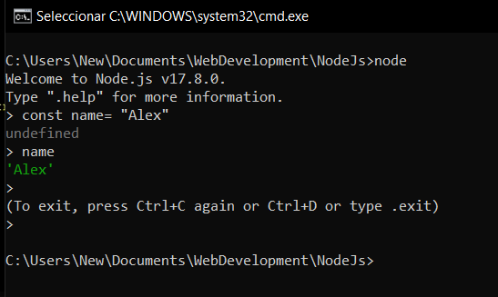
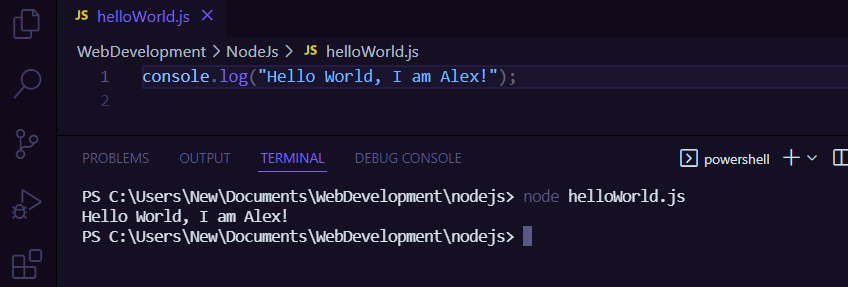

Node.js is an environment to run JavaScript outside of the browser.
More info. Node.js.org
Working on Node.js we have no access to browser APIS.
Unlike browsers apps that are interactive for example users click the button or toggles the nav, with node we build server side apps. Node apps will only consist of pure logic, without the graphical interface. So nowhere in the app we will write document.querySelector().
| Browser | Node.js |
|---|---|
| DOM | No DOM |
| Window | No Window |
| Interactive Apps | Server Side Apps |
| No Filesystem | Filesystem |
| Fragmentation | Versions |
| ES6 Modules | CommonJS |
If we build a browser app and if our users browser does not support a specific feature it is our responsability to fix it, otherwise our app might have bugs.
Unlike browsers where modules are optional, in Node.js you have access to modules by default.
In order to check if Node.js was successfully installed, in your terminal type node --version and you should see your version number. If don´t, you will have to troubleshoot the error.
We have two options:
REPL -> Stands for Read Eval Print Loop. (For playing around)

CLI -> Command Line Interface. Executable terminal, running our app code in Node. (Use essentially for everything.)

Ctrl + C - To stop the process in the terminal.
Are variables that anywhere in your application you can access them.
Example:
__dirname - path to current directory
__filename - file name
require - function to use modules (CommonJS)
module - info aboutcurrent module (file)
process - info about environment where the program is being executed.
To have a clean code, smaller files and more structure to our application, you need to split the code in different modules/files.
CommonJS, every file in Node is a module (by default).
Modules - Encapsulated Code (only shared minimum).